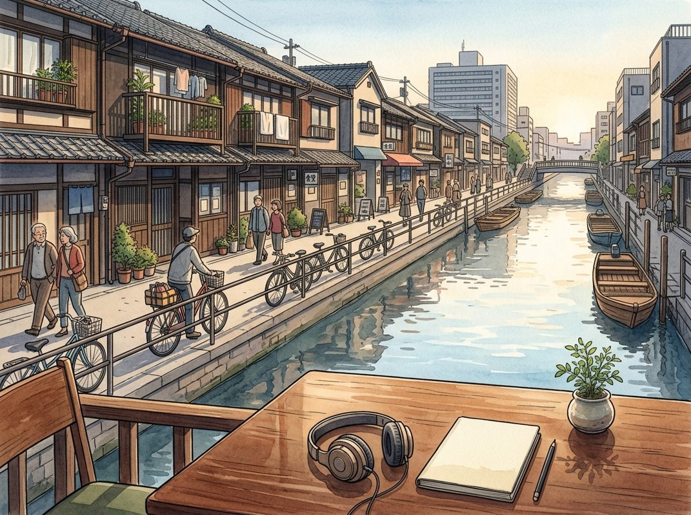

10/18

今日更新
David Byrne Explains How Forgotten Ideas Come Back to Life
来源：Odd Lots
原链接：https://omny.fm/shows/odd-lots/odd-lots-david-byrne-v1
状态：已读完整音频 transcript
本期播客深入探讨了“沉睡美人”现象，即那些被遗忘或低估的优秀思想、作品和技术，如何在特定时机被重新发现并焕发新生。它适合所有对创新、历史、文化变迁以及人类认知偏见感兴趣的中文读者。
- 引言：危机催生“沉睡美人”的觉醒：Odd Lots播客主持人乔·魏森塔尔和特蕾西·阿洛韦观察到，重大变革时期，如金融危机或疫情，往往能像“森林中的空地”一样，为新思想的涌现和旧思想的重估创造机会。在这些时刻，最聪明者与最无知者之间的认知差距缩小，市场对新思想的需求应运而生。嘉宾大卫·伯恩，一位著名音乐家和作家，在他的新书《沉睡美人：好想法为何休眠以及如何苏醒》中，系统探讨了这一现象。他将“沉睡美人”定义为那些最初获得关注，随后逐渐被遗忘，最终因各种原因被重新发现并获得认可的思想、艺术家或作品。伯恩强调，他更关注这些“美人”如何被重新发现，而非如何被遗忘，因为这能为我们寻找当下仍未被发掘的宝藏提供线索。2008年金融危机后，经济学家海曼·明斯基的理论被重新审视，就是一个典型的例子。
- 《白鲸》的沉浮：文学经典的重生之路：赫尔曼·麦尔维尔的史诗巨著《白鲸》是“沉睡美人”的绝佳案例。麦尔维尔早期的航海冒险小说如《泰比》曾大获成功，但当他受朋友纳撒尼尔·霍桑启发，创作出更具寓言色彩的《白鲸》时，却遭遇了商业和评论的双重失败。英国版因缺少以实玛利幸存的跋语，被评论家指责“所有人都死了，那谁来讲述故事？”麦尔维尔因此遭受重创，此后作品反响平平，甚至他死后多年，人们仍不知他是否在世。然而，到了20世纪，随着两次世界大战和极权主义的兴起，人们开始从《白鲸》中读出对20世纪独裁者和狂热行为的预言。艾哈伯船长偏执狂般的复仇，与人类在战争中展现的疯狂不谋而合，使得这部作品在新的时代背景下被赋予了深刻的现实意义，最终成为文学经典。
- 罗马混凝土的智慧：被遗忘的工程奇迹：另一个令人惊叹的“沉睡美人”是古罗马混凝土技术。罗马万神殿的无钢筋穹顶历经2000年仍完好无损，而现代钢筋混凝土建筑的寿命通常只有50至100年。罗马帝国衰落后，这种卓越的建筑技术逐渐失传。文艺复兴时期，维特鲁威的建筑著作中提及的罗马混凝土配方被重新发现，但当时的人们认为这只是历史遗物，无需效仿。直到19世纪，英国人发明了波特兰水泥，成为现代混凝土的先驱，但其制造过程能耗更高，寿命更短，并产生大量二氧化碳。现代人曾误以为罗马混凝土中的白色斑点是混合不均所致，但麻省理工学院的材料科学家在15年前发现，这些“石灰碎屑”能与水反应，使混凝土裂缝自愈。2023年，一家公司成立，旨在复兴这种自愈合的罗马混凝土技术。这个故事揭示了人类“今胜于昔”的偏见，以及对过去智慧的盲目忽视。
- 艺术家的潮起潮落：个人经历的印证：大卫·伯恩作为一名资深音乐人，亲身经历了职业生涯的起伏，这与“沉睡美人”的理念不谋而合。他在90年代曾经历事业低谷，演出场地变小，但后来又重新回到大型舞台。他发现，自己的音乐作品本身并未改变，改变的是时代背景、受众群体和文化语境。他意识到，艺术品的价值和受欢迎程度往往受时尚和潮流的影响，而非其内在品质。这种经历让他学会了不将事业的起伏个人化，而是将其视为一种周期性现象。伯恩也分享了他在创作中如何平衡个人探索与观众期待的经验，例如他尝试拉丁音乐时，在美国市场遭遇抵触，但在拉丁美洲和欧洲却广受欢迎。这让他认识到，虽然不能完全背离观众的期待，但仍有空间进行创新和自我修正。
- 数字化时代与发现的挑战：信息洪流中的筛选：在数字化时代，信息的获取变得前所未有的便捷。过去，寻找小众或前卫的音乐、书籍需要付出巨大的物理努力，而现在，只需轻轻一点即可触达。大卫·伯恩曾通过唱片封面偶然发现巴西艺术家Tom Zé，并将其作品重新推广。然而，这种便捷也带来了新的挑战：信息过载和策展问题。当海量内容触手可及，如何从信息洪流中筛选出真正的“沉睡美人”变得更加困难。康多莉扎·赖斯曾指出，挑战者号航天飞机爆炸事故的部分原因就是“过滤问题”——预警信息存在，但未能有效传达。在选择繁多的今天，人们更容易被算法推荐所引导，而那些未被正确标记或分类的“沉睡美人”可能因此继续沉睡。
历史精选
Bitcoin
来源：Acquired
状态：已读部分音频 transcript
本期节目深入剖析了比特币的诞生背景与核心创新，揭示了它作为一种互联网原生支付系统，如何巧妙地解决了传统金融体系固有的信任成本和欺诈漏洞。它不仅是投资工具，更是对现有货币体系的一次深刻技术革新，适合所有对金融科技、互联网发展史及加密货币底层逻辑感兴趣的听众。
- 传统金融体系的脆弱与高昂代价：节目以主持人David支付税款的亲身经历开篇，引出了传统金融系统（如银行转账、支票、信用卡）在便捷性背后隐藏的巨大风险：账户信息一旦泄露，资金可能被盗取；支票包含个人敏感信息；信用卡欺诈每年造成数百亿美元损失（2018年美国信用卡欺诈280亿美元，其他金融欺诈500-600亿美元）。这些系统并非为互联网时代设计，其中心化、依赖信任的本质，导致了高昂的欺诈预防成本，如同一个巨大的“系统税”，最终由消费者和商家承担。尽管我们习以为常，但其底层逻辑的脆弱性令人担忧。
- 货币演进：从实体到数字的挑战：回顾货币历史，从14世纪意大利文艺复兴时期的现代银行，到17世纪英国的纸币，再到政府主导的中央银行体系，以及后来的支票和自动化清算系统（ACH）。ACH在1959年实现全国范围内的批量处理，虽是里程碑，但3-5天的延迟无法满足互联网需求。信用卡（如Visa前身Bank of America）通过提供信用解决了即时支付问题，却带来了消费者债务和商家的手续费（2.9%+30美分）及资金延迟到账困境。借记卡虽有所改进，但本质上仍是ACH的卡片化，传统金融体系的层层叠加，使其难以适应互联网的瞬息万变。
- 互联网时代的支付探索与PayPal的局限：随着互联网的普及，在线支付的复杂性呈指数级增长。Stripe等公司通过构建现代基础设施，简化了商家在线收款的流程。在此之前，也曾出现过Digicash、Egold、Bit Gold等数字货币尝试，甚至腾讯的QQ币一度流行到被政府监管。PayPal是其中最接近成功的案例，其愿景是创建互联网原生的数字货币，并在eBay上找到了杀手级应用。然而，PayPal的致命弱点在于其中心化架构，它像传统银行一样需要处理海量欺诈（Palantir即源于此），且交易仍以美元计价，并非一套独立的货币体系，未能从根本上解决信任问题。
- 2008：比特币诞生的时代背景：2008年是比特币诞生的关键年份。9月15日雷曼兄弟破产引发的全球金融危机，不仅动摇了人们对传统银行体系的信任，也暴露了其内在的脆弱性。与此同时，互联网支付的日益复杂化，使得现有金融基础设施的弊端愈发凸显。正是在这样的背景下，一个名为中本聪的匿名实体于2008年8月18日注册了bitcoin.org域名，并于10月31日（雷曼破产后六周）在密码学邮件列表上发布了题为《比特币：一种点对点电子现金系统》的白皮书。这并非偶然，而是对时代痛点的深刻回应。
- 比特币的初心：解决互联网支付的信任难题：中本聪的白皮书开宗明义，指出互联网商务过度依赖作为受信任第三方的金融机构来处理电子支付，这种基于信任的模型存在固有弱点，如无法实现完全不可逆的交易（信用卡拒付是典型例子），以及因调解纠纷而增加的交易成本和欺诈风险。白皮书的核心目标是设计一个互联网原生的支付和货币系统，能够实现点对点交易，无需任何中心化第三方，从而消除这些“系统税”。它并非一开始就强调抗通胀或去中心化政府，这些是其设计带来的衍生价值和后续发展。
Mitsubishi Corporation: A Japanese Trading Company - [Business Breakdowns, EP.156]
来源：Business Breakdowns
原链接：https://joincolossus.com/episodes/17905865/coghlin-mitsubishi-corporation-a-japanese-trading-company
状态：已读网页 transcript
本期播客深入剖析了日本综合商社三菱商事（Mitsubishi Corporation）的独特商业模式、历史演变及其在全球经济中的作用，特别适合对全球多元化企业、日本市场动态以及巴菲特投资逻辑感兴趣的投资者和商业观察者。
- 日本商社的独特基因与三菱的广阔版图：三菱商事是日本综合商社（sogo shosha）模式的典型代表，这种商业模式深深植根于日本文化。它不仅仅是贸易公司，更是集贸易、投资和运营于一体的多元化企业集团。三菱的业务范围极其广泛，涵盖能源、零售、制造、采矿、汽车和食品等多个关键领域，在全球范围内拥有巨大的影响力。这种模式使其能够通过连接全球供应链、发现新市场机会和投资新兴产业来创造价值。播客强调，理解三菱商事，首先要理解日本商社这种独特且复杂的商业生态系统，它在全球经济中扮演着不可或缺的中间人角色。
- 伯克希尔的青睐：全球投资者关注的焦点：2020年，沃伦·巴菲特旗下的伯克希尔·哈撒韦公司披露，其已对日本五大综合商社（三菱、三井、伊藤忠、丸红和住友）进行了重大投资，持股比例接近10%。这一举动立即引起了全球投资者的广泛关注，将这些长期以来被低估的日本巨头推向了聚光灯下。巴菲特的投资不仅是对这些公司内在价值的认可，也暗示了其认为这些公司在资本配置和股东回报方面可能存在积极转变的潜力。这一事件成为了理解日本商社投资价值和市场定位的关键切入点，促使更多人重新审视这些传统企业的魅力。
- 日本企业文化的转型：从利益相关者到股东价值：播客深入探讨了日本企业文化中一个重要的转变：从传统的以员工、供应商和客户等所有利益相关者为中心的模式，逐渐向更加注重股东价值的方向发展。这种文化上的演变对日本资本市场产生了深远影响，促使企业重新审视其资本配置策略和公司治理结构。对于三菱商事而言，这意味着其在投资决策、股息政策和股票回购等方面，需要更加积极地回应股东的诉求，以提升股东回报。这种转变是理解日本企业未来发展方向和投资机会的关键因素之一。
- 三菱的投资价值与运营策略：三菱商事的投资案例引人注目，其价值不仅体现在庞大的资产规模和多元化的业务组合上，更在于其独特的全球网络和运营能力。公司通过其遍布全球的子公司和合资企业，能够有效地整合资源、管理风险并抓住不同地区的增长机遇。播客指出，三菱旗下一些运营公司的成功，是其整体价值的重要组成部分。此外，三菱独特的管理动态和灵活的资本配置策略，使其能够根据市场变化进行调整，持续为股东创造价值。这种深度参与和全球协同是其成功的秘诀。
- 资本配置的演进与再投资策略：随着日本企业文化向股东价值导向的转变，三菱商事的资本配置优先级也在发生变化。公司正更加注重效率和回报，积极评估其投资组合，并进行战略性的再投资和资本再分配。这意味着三菱可能会剥离表现不佳的资产，并将资金投入到具有更高增长潜力的领域，或者通过提高股息和股票回购来直接回馈股东。这种演进的资本配置策略，对于提升公司的长期价值和吸引更多全球投资者至关重要。理解这一变化，有助于预测三菱未来的财务表现和战略方向。